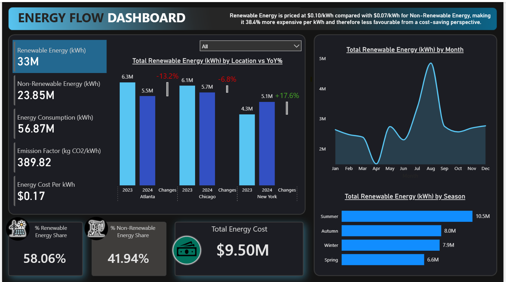
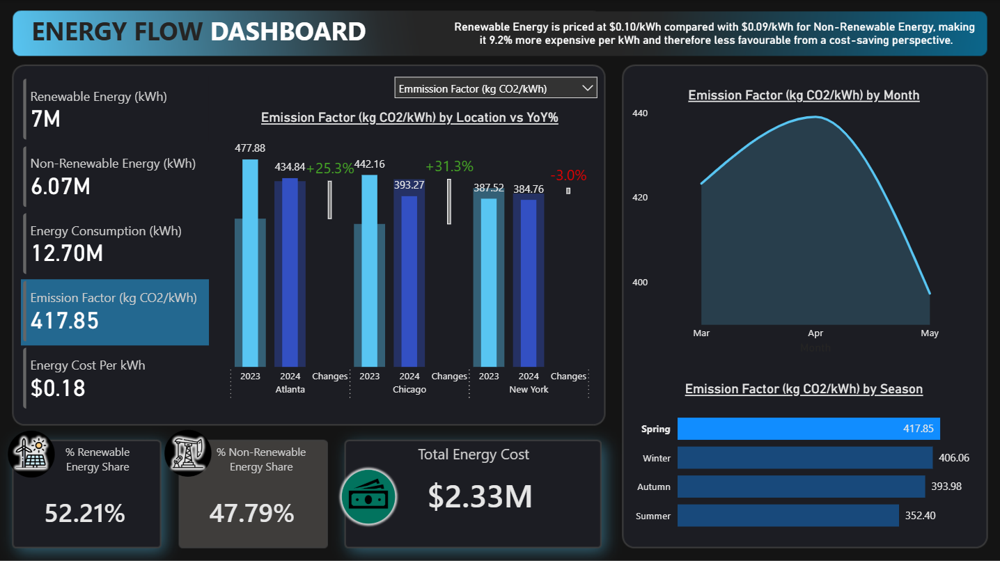
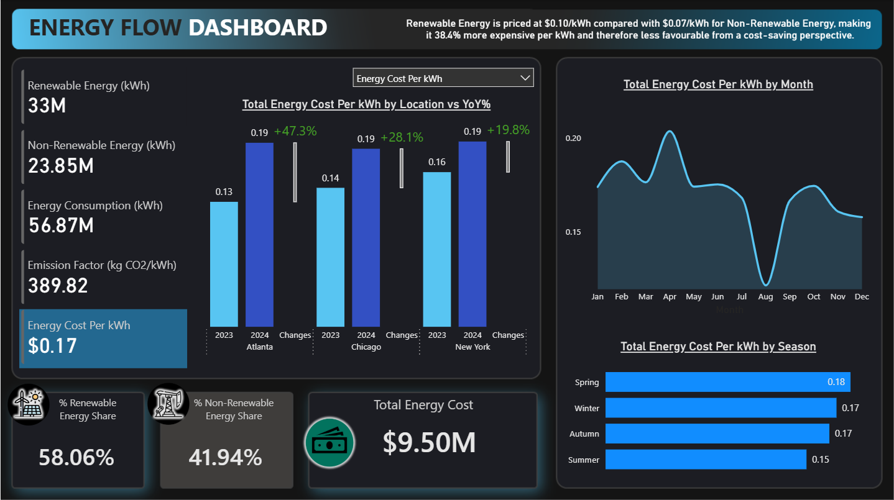

A Power BI dashboard analysing renewable and non-renewable energy consumption, cost efficiency, emissions, monthly trends and seasonal patterns across selected locations.

Project Summary
This project involved building an interactive Power BI dashboard to monitor energy consumption, cost performance, emissions and renewable versus non-renewable energy usage across selected locations.
The dashboard was designed to make energy performance easier to interpret by bringing multiple raw Excel files into a single reporting view. It allows users to compare locations, track monthly and seasonal patterns, analyse cost trends and understand how renewable and non-renewable energy sources contribute to overall consumption.
The project demonstrates a full business intelligence workflow, including data preparation, data modelling, DAX measure creation, KPI design, dynamic visuals, conditional formatting and final dashboard presentation.
Tools Used
- Power BI for dashboard development and visual reporting
- Power Query for importing, combining and preparing multiple Excel files
- DAX for KPI measures, dynamic calculations and year-over-year analysis
- Calendar table logic for time-based and seasonal analysis
- Field parameters for switchable energy metrics
- Conditional formatting for dynamic visual highlighting
- PowerPoint for dashboard background design and layout refinement
Dashboard Preview
Energy Performance Overview
Provides a high-level view of energy consumption, cost, emissions and energy source performance across the selected locations. This section helps users quickly understand overall energy performance and compare renewable, non-renewable and total energy metrics.

Seasonal Consumption Patterns
Highlights how energy consumption changes across seasons, helping identify periods of higher demand and location-level variation in usage behaviour.

Energy Cost Trend Analysis
Compares energy cost patterns over time and across selected locations, helping identify where energy spend is concentrated and how costs fluctuate throughout the year.
Key Skills Demonstrated
- Power BI dashboard design and report layout
- Power Query data loading, combining and preparation
- DAX measure creation for KPIs and dynamic calculations
- Year-over-year performance analysis
- Calendar table creation for time-intelligence analysis
- Seasonality analysis using custom date categories
- Dynamic metric selection using field parameters
- Conditional formatting for interactive highlighting
- Energy cost, emissions and consumption analysis
- Dashboard background design and visual polish
- Business intelligence reporting and insight presentation
Why This Project Matters
This project shows that my Power BI and business intelligence skills are transferable across different analytical domains. It demonstrates my ability to turn raw operational data into a structured, interactive dashboard that helps users monitor performance, compare locations, identify seasonal trends and interpret key energy metrics more clearly.
It also strengthens my portfolio by showing experience with more advanced Power BI features, including DAX-driven KPIs, field parameters, conditional formatting, calendar tables, dynamic visuals and custom dashboard design.
The full dashboard file, supporting documentation and project screenshots are available in the GitHub repository.